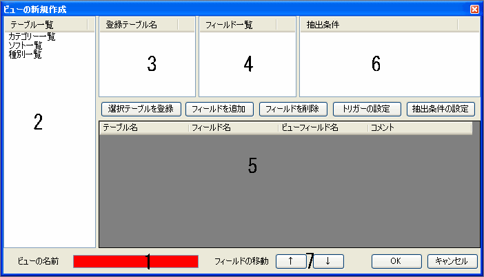

ビューは複数のテーブルを結合して表示したり、条件を設定して表示することが可能です。
ビューの名前を入力します。
現在のデータベースにあるテーブルの一覧が表示されます。
テーブル一覧からビュー用に登録したテーブルの一覧が表示されます。
選択中の登録テーブルのフィールド一覧が表示されます。
ビューに採用されたフィールドの一覧です。そのフィールドの元テーブル名やコメントも表示されます。ビューフィールド名をここで指定します。
抽出条件の設定で設定した抽出条件の一覧が表示されます。
ビュー用フィールドデータ一覧の選択中のフィールドを上下に移動させます。この並びがビューでのフィールドの並びとなります。
Copyright(C) 2008-2013 Pup All Rights Reserved.